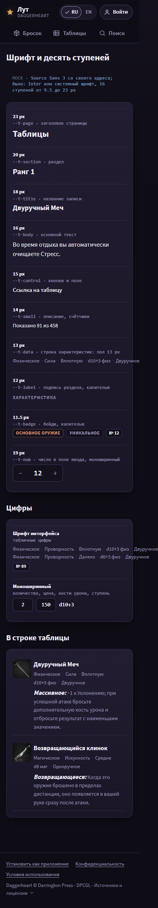
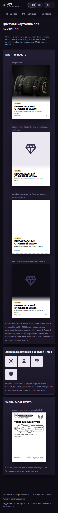
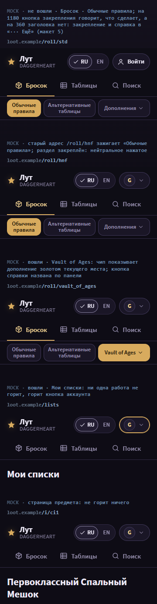
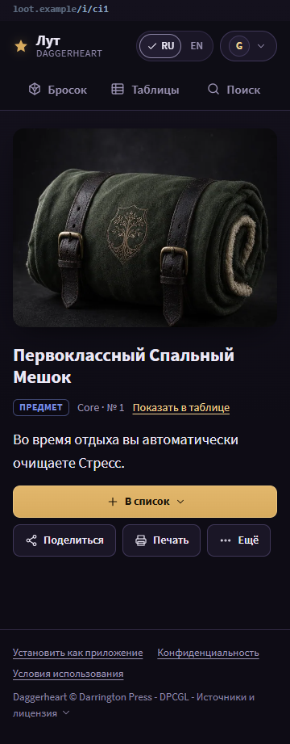
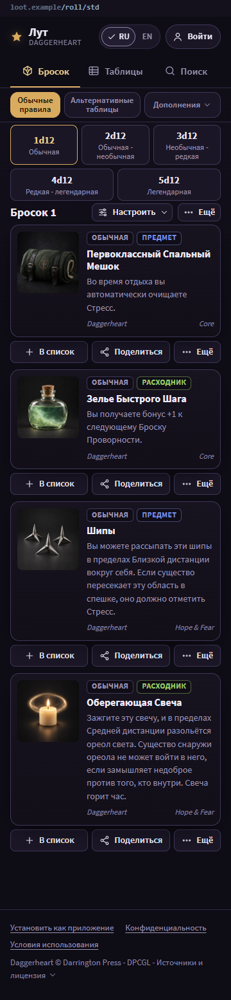
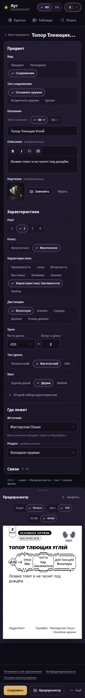
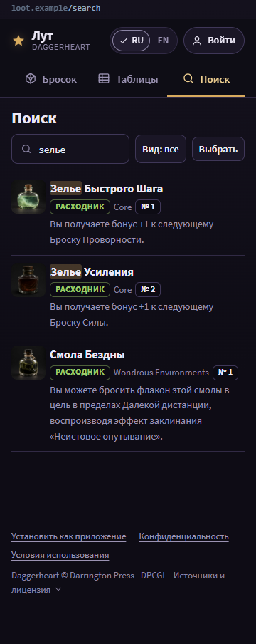
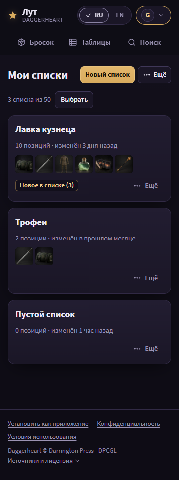
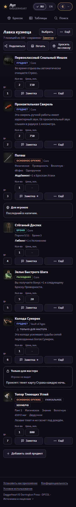

Task 57: all batch mocks
This page lists the batch mocks in batch order, with the status of each and its open owner questions. Each batch page shows its states at 360 and 1180 px in RU and EN, and, where the page has primary content, its first-screen measure. Direction R, the history these mocks start from, is on the direction page.

1. Foundation
Approved (owner, 2026-10-29)The font, the ten steps, the neutral pressed state, the art well and the share cards, on the linear page ground.
Open owner questions- None (Q1b.1 answered: the black-and-white card stays as it is).

1b. The no-picture placeholder retired
Ready for reviewThe color print card with the light print well, the sheets, the editor's print preview, the link card of a no-picture item.
Open owner questions- None. The light well is not checked against the Figma color node yet.

2. Shell
Ready for reviewThe header, the three jobs, the mode row, the account control, the pin, the toast. First screen: pass.
Open owner questions- None (R7 and R3 answered).

3. Catalog tables and filters
Ready for reviewThe table picker, the filter column and sheet, the rows, the selection mode, the empty state. First screen: pass (248 / 256, 281 / 288).
Open owner questions- None (C1 and C57 answered).

4. Record card, actions, item page, dialog, /h/
Ready for reviewThe dossier page, «Ещё», the bottom sheet with a fixed bar, the error page. First screen: pass.
Open owner questions- None.

5. Roller pages and the card face on results
Ready for reviewThe dice row, the results, «Настроить бросок». First screen: pass at the limit (255 / 256, 234 / 288).
Open owner questions- None (C38 answered).

6. Homebrew editor, homebrew pages and imports
Re-rendering (unit B)Drawn by unit B.
Open owner questions- The batch page lists them.

7. Search, account, print preview, empty and error states
Ready for review«Вид: все ▾», «Настройки листа ▾», the account rows. First screen: pass on search, account and print.
Open owner questions- None. The unreadable print sheet at 360 (C30) stays open for the batch refresh.

8. Lists page, list cards, lists import, add-to-list menu
Re-rendering (unit B)Drawn by unit B.
Open owner questions- The batch page lists them.

9. Account list page and shared list page
Re-rendering (unit B)Drawn by unit B.
Open owner questions- The batch page lists them.
Batch 10 (the lock) has no mock.